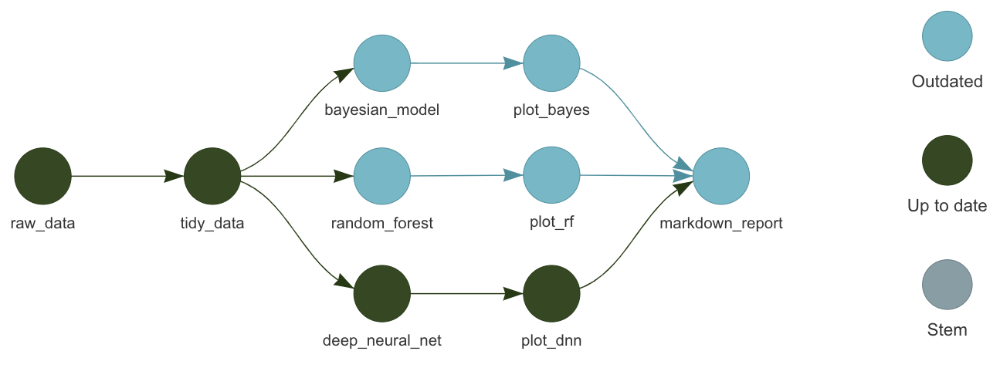

Managing complicated research workflows in R with {targets}
2025-02-26
Moving Toward Reproducibility
Working toward reproducible analyses benefits:
You in the future
Your collaborators
The greater community

Image from: Illustrations from the Openscapes blog Tidy Data for reproducibility, efficiency, and collaboration by Julia Lowndes and Allison Horst


Workflow management
Automatically detect dependencies
Run your entire analysis with one master command
Skip steps that don’t need to be re-run
Scaleable


Bayesian analyses with targets


“target factories” for Bayesian analyses
Simplify analyses by automatically creating targets for multiple steps
E.g. defining a target with
tar_stan_mcmc()actually generates multiple targets that wrangle data, run the MCMC, create a table of posterior draws, etc.
Geospatial targets

geotargets provides helpers to use geospatial packages like terra and stars with targets
High Performance Computing

-
crew.clusterprovides additional “controllers” for HPC includingcrew_controller_slurm(). - Check out this template repository with code that you can use to run a
targetsworkflow on the UA HPC
Cloud Storage
By default, the
_targets/store is on your computer and not shared with collaboratorsCollaborators will have to run
tar_make()to reproduce the workflow, which might not be convenient if some targets take days or weeks to run

Cloud Storage
Optionally,
_targets/can be stored in the cloud (Amazon Web Services or Google Cloud S3 buckets)These stores can be versioned, so you can roll back your
_targets.Rand not have to re-compute targets.